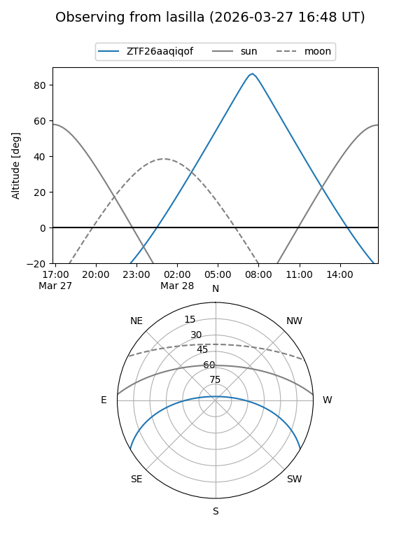
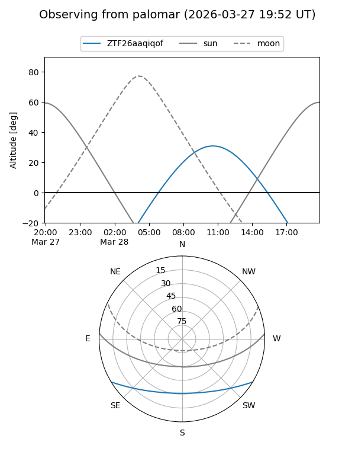

ZTF26aaqiqof
Target ZTF26aaqiqof at 2026-03-27 13:20
Aliases and brokers:
FINK: link
Lasair: link
ALeRCE: link
alt names
ZTF26aaqiqof (ztf,fink_ztf)
Coordinates:
equatorial (ra, dec) = 227.3901,-25.57870
equatorial (HMS+DMS) = 15:09:33.61,-25:34:43.32
galactic (l, b) = (338.1959,+27.67554)
Flags:
Photometry:
last ztfg=17.33
1 ztfg detections
Lightcurve
Visibility


Additional plots